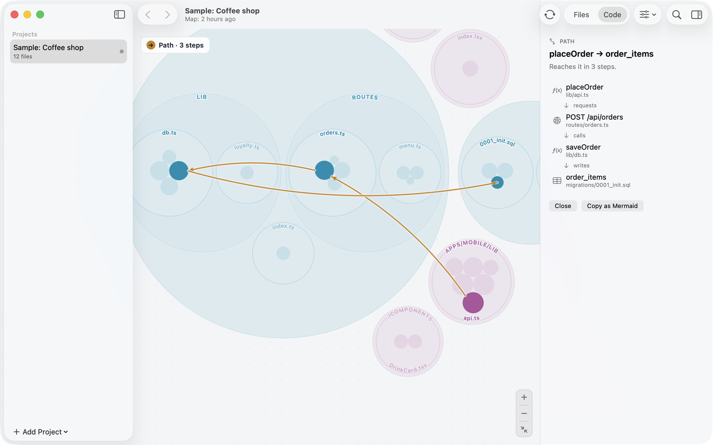
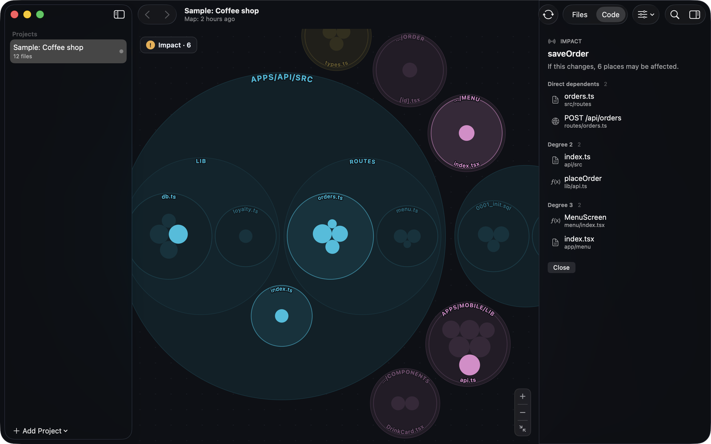
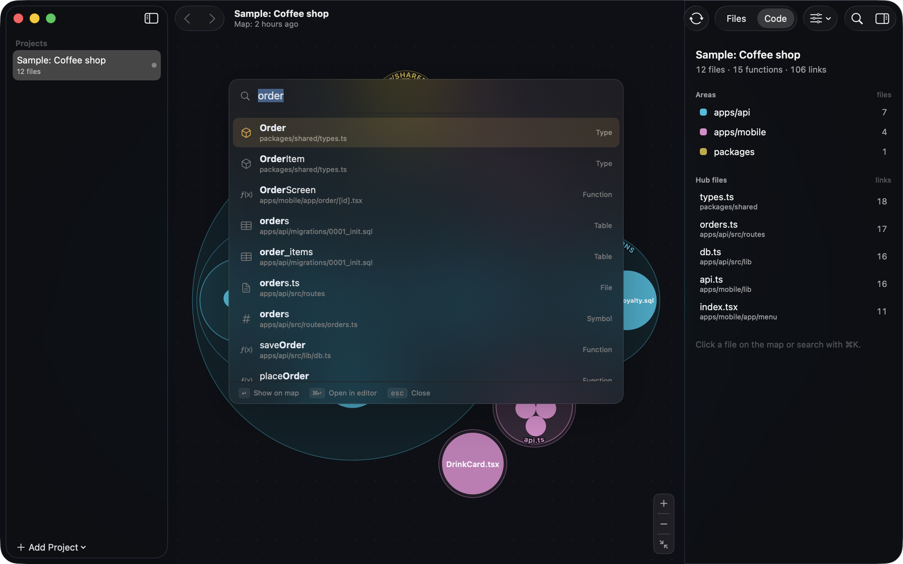
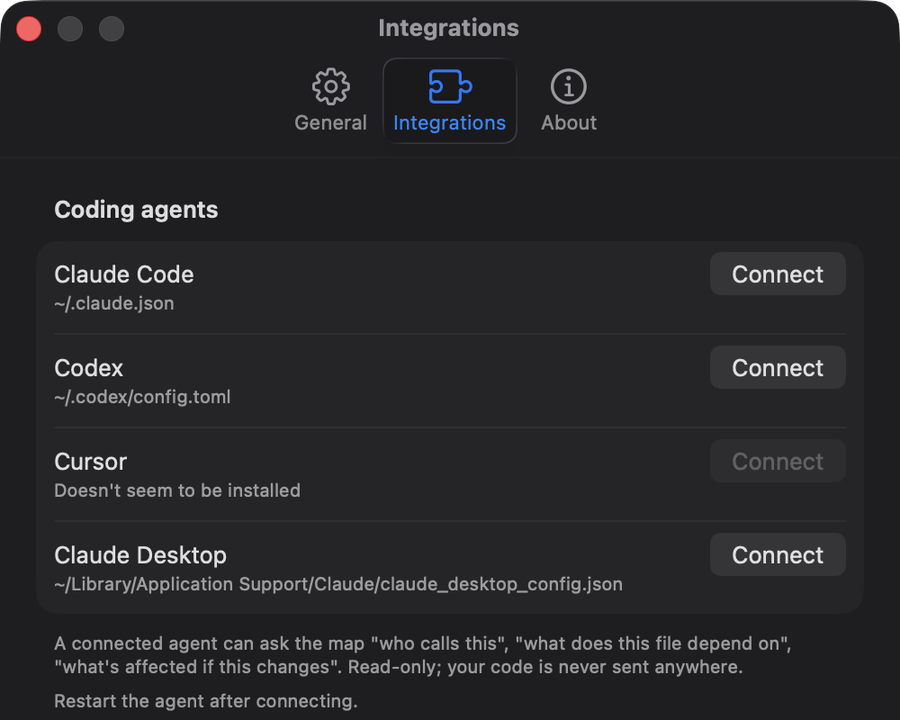

Follow a request end to end
Mapo links client calls to the routes they hit, and routes to the tables they read and write. Find path shows the whole chain between any two pieces, step by step.
placeOrder→POST /api/orders→saveOrder→order_items
Mapo turns a codebase into a live map: every ring is a folder, every circle a file, functions live inside. Hover anything to see what it uses and what uses it — from the app, through the API, down to the database.
brew install --cask bur2ak/tap/mapoUnderstands the stack you already use
Hover a circle to see its links.
No graph theory, no spaghetti. Folders are places, files are buildings, and the roads only appear when you ask.
Mapo links client calls to the routes they hit, and routes to the tables they read and write. Find path shows the whole chain between any two pieces, step by step.

Impact lists everything that depends on a file, function, endpoint or table — direct users first, then theirs. Copy it as a Mermaid diagram for your pull request.

Search understands camelCase — plOrd finds placeOrder. Files, functions, types, endpoints and tables — Return flies there, ⌘Return opens your editor at the right line.

Connect Claude Code, Codex, Cursor or Claude Desktop in one click. Your agent asks the map who calls what and what a change touches — and gets file paths and line numbers back.

› Which code writes the orders table? mapo_node orders table orders apps/api/migrations/0001_init.sql:8 Read by (1): route GET /api/orders/:id apps/api/src/routes/orders.ts:17 Written by (2): function saveOrder apps/api/src/lib/db.ts:17 route PATCH /api/orders/:id/status apps/api/src/routes/orders.ts:22 › What does the API expose, and who calls it? mapo_endpoints /api/ route GET /api/menu routes/menu.ts:7 ← 1 caller: fetchMenu route POST /api/orders routes/orders.ts:9 ← 1 caller: placeOrder route GET /api/orders/:id routes/orders.ts:17 ← 1 caller: fetchOrder › What breaks if I change saveOrder? mapo_impact saveOrder Distance 1 (2): route POST /api/orders apps/api/src/routes/orders.ts:9 Distance 2 (2): function placeOrder apps/mobile/lib/api.ts:21
Analysis happens on your machine. Works offline.
Download and open. Nothing to sign up for.
No analytics. Mapo only checks GitHub for updates.
Apache-2.0. Read every line on GitHub.
Open the sample project on first launch to see it work in ten seconds, then drop in your own folder or pick a GitHub repository.
One command; brew upgrade knows about it.
brew install --cask bur2ak/tap/mapomacOS 14 Sonoma or later · Apple silicon (M1 and newer)
Yes. Mapo is open source under Apache-2.0, with no paid tier and no account.
Code structure comes from graphify (TypeScript, JavaScript, Python, Swift, Go, Rust, Java, Kotlin and more). On top of that, Mapo links HTTP calls to routes in Hono, Express, Fastify, Koa, Elysia, Next.js, Cloudflare Workers, FastAPI, Flask and Django; tRPC procedures to their callers; and code to tables in SQL migrations, Prisma, Drizzle and Supabase.
They are inferred from code patterns and marked as inferred. Every link points at the line it came from, so checking one takes a click. On a 470-file production app, every client call in the app matched its server route.
cal.com — over 5,000 files and 100,000 links — maps in about two minutes on an M-series Mac. After that the map updates in the background as you work.
Double-click opens the file at the right line in VS Code, Cursor, Windsurf, Zed, Xcode, Sublime Text or your default app.
Not yet. Mapo is a native Mac app for Apple silicon today.